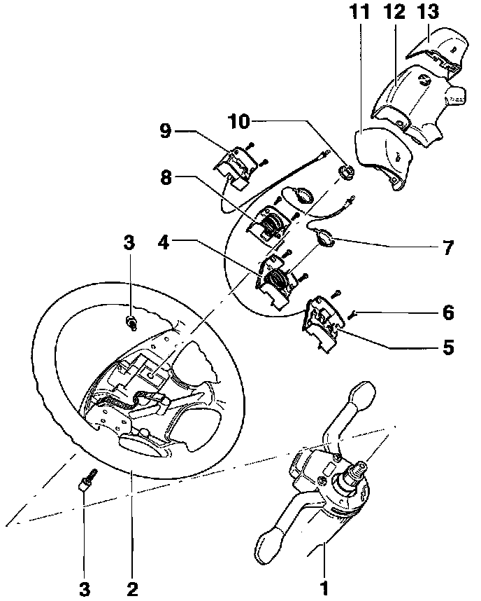

Steering Wheel: Diagrams
Steering wheel with airbag, servicingWARNING: The airbag igniter is an explosive device. Handled improperly or without adequate safeguards, it can be accidently activated and cause serious personal injury. To guard against personal injury or airbag system failure, only trained Volkswagen Service technicians should test disassemble or service the airbag system.
Before starting any work on the steering components of an airbag equipped car, read all safety precautions.

1. Steering column
2. Steering wheel for airbag
3. Socket-head bolt
4. Left horn button lower section
5. Left horn button lower section (standard)
6. Torx screw T10
7. Contact with cable
8. Right horn button lower section
9. Right horn button lower section (standard)
10. Hex nut 50 Nm (37 ft lb)
11. Left horn button upper section
12. Airbag unit
13. Right horn button upper section